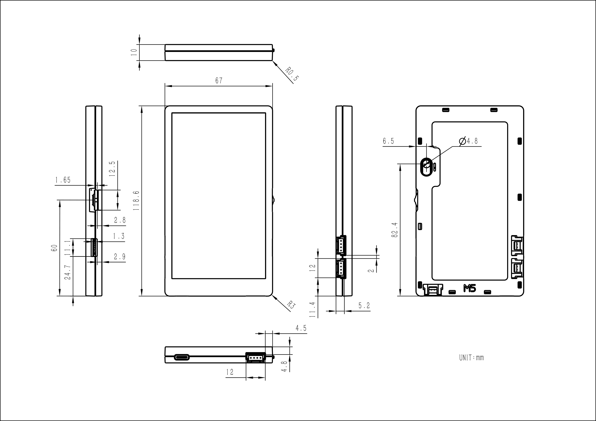

Turn your M5Paper or PaperDIY into a TRMNL display.
Connect with USB, flash from this page, then finish setup over the device’s temporary Wi-Fi network. No desktop flashing tools required.

Select the exact device above. M5Paper and PaperDIY use different processors and their firmware images are not interchangeable.
Open this page in desktop Chrome or Edge to use Web Serial.
Browser access to the serial port was blocked. Reload the page and allow the connection when prompted.
Keep the USB cable connected until installation completes.
Three steps, then it runs on its own.
-
01
Connect
Use a data-capable USB-C cable, power on the device, and close any serial monitor that is using it.
-
02
Install
Select Connect & install, choose the device serial port, and follow the prompts. Installing erases old device settings so the new firmware starts cleanly.
-
03
Configure
Join the
TRMNL-XXXXWi-Fi network and enter your Wi-Fi details and TRMNL API key in the setup page.